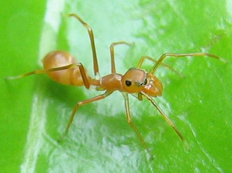

चींटी-नुमा मकड़ीKerengga Ant-mimic Spider
Myrmarachne plataleoides · Salticidae · SPD-0021

- Scientific nameवैज्ञानिक नाम
- Myrmarachne plataleoides (C.L. Koch, 1846)
- Familyकुल
- Salticidae
- Hindiहिंदी
- चींटी-नुमा मकड़ी
- Local namesस्थानीय नाम
- ant mimic spider, ant-mimic spider, chinti makdi, chiti makdi
- Status hereयहाँ की स्थिति
- native
- Movementआवागमन
- Resident, here all year
- IUCNIUCN
- not evaluated
- Reviewसमीक्षा
- audited and independently read
When to look कब देखें
Present all year.साल भर मौजूद।
चींटी-नुमा मकड़ी / Kerengga Ant-mimic Spider
Myrmarachne plataleoides (C.L. Koch, 1846) — Salticidae
चींटी-नुमा मकड़ी — यह एक अद्भुत जंपिंग स्पाइडर है जो पूरी तरह चींटी की तरह दिखती है। इसका शरीर छोटा, लाल-भूरा और चींटी जैसा आकार है। असली चींटी की तरह इसके दो सींग भी होते हैं, जो असल में लंबी पलकें (पेडिपैल्प्स) हैं। यह शिकार के लिए चींटी का रूप बदल लेती है क्योंकि कई शिकारी चींटियों को खाना पसंद नहीं करते। सूखे मौसम में पत्तियों के नीचे छिपी रहती है, और बरसात में हरी पत्तियों पर दिखाई देती है।
Quick Identification त्वरित पहचान
| Feature | Description |
|---|---|
| Size | Small, 3–5 mm in total length |
| Colour | Reddish-brown or orange-brown body; darker markings on cephalothorax |
| Body shape | Distinctly ant-like, with narrowed petiole (waist)-like connection between cephalothorax and abdomen |
| Pedipalps | Long, ant-like, extending forward as if they were antennae; palps held together to mimic ant antennae |
| Legs | Relatively long, held close to the body in an ant-like posture |
| Movement | Jerky, erratic movement like a foraging ant |
| Eyes | Eight eyes arranged like other jumping spiders; large forward-facing pair |
Field tip: Among flowers and low vegetation, look for a small reddish-brown spider moving with jerky, ant-like motions and holding its front legs forward. The narrow "waist" and the overall body shape immediately distinguish it from a true ant. The jumping spider's large forward-facing eyes, if visible under magnification, confirm the identification.
हिंदी — कैसे पहचानें: बहुत छोटी, लाल-भूरी। बीच से पतली, चींटी जैसी। आगे की दो लंबी पलकें, चींटी की सींग जैसी। फूलों के पास छोटी-छोटी उछलती हरकतें।
Morphology आकारिकी
Biometrics (specimens from tropical Asia):
| Measurement | Range |
|---|---|
| Total body length | 3.0–5.0 mm |
| Cephalothorax length | 1.5–2.2 mm |
| Abdomen length | 1.5–2.8 mm |
| Leg span | 8–12 mm |
| Pedipalp length | 1.0–1.5 mm |
Cephalothorax: Moderately elevated, reddish-brown to orange-brown, with darker markings on the surface. The anterior portion is narrower, supporting the large forward-facing eyes.
Abdomen: Oval, slightly narrower than the cephalothorax, creating the characteristic ant-like petiole silhouette. Coloration matches the cephalothorax.
Legs: Four pairs, relatively long and slender, held close to the body. The gait and posture are distinctly ant-like, with the spider moving with jerky steps.
Pedipalps: Extremely elongated and held together along the midline, mimicking ant antennae. They are held forward during locomotion and rest, enhancing the ant mimicry.
Eyes: Eight eyes arranged in three rows. The large anterior median pair (AME) provides forward-looking vision; the anterior lateral pair (ALE) is smaller. Posterior eyes are small.
Sexual dimorphism: Males and females are similar in size and appearance.
हिंदी: छोटा शरीर, लाल-भूरा। बीच में पतला, गरदन की तरह। सामने की दो लंबी पलकें, चींटी की सींग की तरह बाहर। आँखें घूमती नहीं, सिर्फ आगे की ओर देखती हैं।
Behaviour & Ecology व्यवहार और पारिस्थितिकी
Ant-mimicry predator. Myrmarachne plataleoides is one of the most remarkable examples of aggressive mimicry in spiders. The species mimics the morphology and behaviour of ants, particularly in the genus Oecophylla (weaver ants) and other common ant species. The narrow petiole, the coloration, and the posture all contribute to the illusion. More remarkably, the spider moves with jerky, staccato movements characteristic of ants, further enhancing the disguise.
The adaptive value of this mimicry is clear: many arthropods avoid ants due to their aggressive defence and chemical weaponry. By appearing to be an ant, the spider gains access to micro-habitats (flowers, leaves, vegetation) without triggering defensive responses from true ants or predators that avoid ants. Once the spider encounters prey that does not flee, it uses its superior vision and jumping ability to capture it.
Hunting strategy: The spider forages actively on vegetation, moving from flower to flower and leaf to leaf. When prey is detected, the spider stalks it in typical jumping spider fashion, anchoring a dragline before pouncing. Small arthropods, including flies, small beetles, and other tiny insects, are captured.
Habitat preference: Found in vegetation of all heights, from ground-level grasses to shrubs and garden plants. It is particularly common near flowering plants, where small insect prey is abundant.
हिंदी: चींटी की तरह दिखती है ताकि शिकार न देखे और डर न जाए। फूलों के पास छोटी मक्खियाँ और कीड़े खाती है। अपने ऊपर एक सुरक्षा डोरी बाँधकर कूदती है।
Life Cycle / Phenology जीवन चक्र
| Stage | Event |
|---|---|
| Mating | Spring and early monsoon (April–June) |
| Egg cocoon | Laid in protected microhabitats; 20–40 eggs per clutch |
| Incubation | 10–15 days |
| Juvenile growth | 3–4 moults to reach sexual maturity |
| Lifespan | ~1 year |
| Most active | March–October; less active during peak heat (May–June) and cool season (December–February) |
Breeding: Males and females encounter during the active season. Courtship involves ritualized movements and displays unique to this species. Females lay eggs in silken cocoons placed in leaf crevices, under bark, or in vegetation.
हिंदी: गर्मी और बरसात में सबसे सक्रिय। अंडे पत्तियों के नीचे छिपाती है। दो हफ़्ते में बच्चे निकल आते हैं।
Host Plants or Prey आहार
Carnivorous diet:
- Small flies and midges
- Tiny beetles and weevils
- Small caterpillars
- Other small arthropods encountered on vegetation
The spider shows no host plant specificity; it preys on whatever small arthropods it encounters in its foraging habitat.
Predators / Natural Enemies शत्रु
- Small parasitoid wasps attack juveniles and adults
- Sphecid wasps (spider-hunting wasps) capture and provision mud nests
- Lizards and small insectivorous birds prey on the spider on vegetation
- Ants may attack if the mimicry is recognised or during territorial disputes
Agricultural / Human Relevance कृषि प्रासंगिकता
Ecological role. Myrmarachne plataleoides is a natural predator of small pest arthropods. It controls populations of small flies, mites, and other arthropods that may damage flowering plants. In gardens and on crops with flowers or seed heads, these spiders are beneficial.
Harmlessness to humans. The species poses no threat to humans. Its small size and lack of venom of medical significance make it completely safe. Its presence in vegetation is a sign of a healthy, diverse arthropod community.
Research interest. The ant-mimicry of Myrmarachne species has long attracted the attention of behavioural ecologists and evolutionary biologists, making it a model for aggressive mimicry research.
हिंदी: छोटी मक्खियों और कीड़ों को खाती है। बगीचों के लिए अच्छी। चींटी की नकल करती है — यह इसका सबसे दिलचस्प अंग है।
Expected Locally स्थानीय रूप से अपेक्षित
Not a field record. Written from published accounts for eastern Uttar Pradesh. No confirmed local sighting yet — if you have seen it, that is what the atlas needs.
अभी तक स्थानीय पुष्टि नहीं। यह विवरण प्रकाशित स्रोतों से है, किसी अवलोकन से नहीं।
Expected during the warm season (March–October) on flowering plants, shrubs, and vegetation edges in Basti district. The species is likely present but may be overlooked due to its small size and ant-like appearance. A photograph showing the characteristic narrow petiole, pedipalp morphology, and forward-facing large eyes would confirm local presence.
Distribution वितरण
Global range: Widely distributed across tropical and subtropical regions of Asia, from the Indian subcontinent through Southeast Asia to China and Japan.
In India: Present in forested regions, gardens, and agricultural areas throughout the subcontinent.
In Uttar Pradesh: Expected in the warm months across the state, particularly in regions with diverse vegetation.
In Basti district / eastern UP: Likely present during warm months based on habitat suitability; no confirmed local record yet.
Research Questions शोध प्रश्न
- How effective is the ant-mimicry of Myrmarachne plataleoides in reducing attack rates by ant-averse predators compared to non-mimicking spiders? — Compare predation rates on mimicking vs. non-mimicking spiders in controlled experiments.
- Which ant species does this spider mimic most closely in Basti district, and does the mimicry vary between locations? — Collect specimens and compare morphology with local ant species.
- What is the prey spectrum of this spider in natural habitats, and does it differ seasonally? — Dissect or observe feeding behaviour on flowers.
- How does temperature affect the jerky, ant-like movement and foraging efficiency of this spider? — Measure walking speed and hunting success at different temperatures.
- Is the ant-mimicry effective against actual ants, or do resident ants recognise and attack this spider? — Observe behaviour when the spider is placed near ant nests.
Similar Species मिलती-जुलती प्रजातियाँ
| Species | How to tell apart | हिंदी |
|---|---|---|
| True weaver ants (Oecophylla smaragdina) | Six legs and segmented body, not eight legs; no forward-facing large eyes | असली चींटी — छह पैर, आठ नहीं |
| Other small jumping spiders (e.g., Hasarius) | Lack the narrow petiole; move less jerky; not ant-like in appearance | अन्य जंपिंग स्पाइडर — चींटी की तरह नहीं |
| Small ant-mimicking mites | Eight legs but lack the large forward-facing jumping spider eyes | कुछ घुन भी चींटी जैसे दिख सकते हैं |
Field rule: A tiny reddish-brown spider with a narrow waist, holding its front legs forward like antennae, moving with jerky ant-like motions on flowers and vegetation, is Myrmarachne plataleoides; the large forward-facing eyes (visible under magnification) and the jumping spider body plan confirm it.
Taxonomy & Classification वर्गीकरण
Original description. Described by C.L. Koch in 1846. The genus Myrmarachne (from Greek myrma, ant, and arachne, spider) was erected to group ant-mimicking jumping spiders. The species epithet plataleoides refers to a platalid (possibly a reference to the flat-faced appearance or mimic resemblance).
Subspecies. Monotypic — no subspecies currently recognised, though populations across Asia may show minor variation.
Family and order placement. Order Araneae (spiders), family Salticidae (jumping spiders), subfamily Salticinae.
Phylogenetic notes. Myrmarachne is a well-supported genus within Salticidae, characterised by ant-mimicry, elongated pedipalps, and a distinctive foraging behaviour. The genus is diverse, with ~200 described species across the tropics and subtropics.
IUCN status rationale. Not evaluated. Widespread in suitable habitats across tropical Asia; no conservation concern.
Photo Gallery फोटो गैलरी
Photos needed आवश्यक फोटो
- [ ] Dorsal view on leaf or flower (ऊपर की ओर से)
- [ ] Ant-like posture in motion (चींटी की तरह चलते हुए)
- [ ] Close-up of forward pedipalps and face (सामने की पलकें)
No photos yet — add field photos to media/species/ant_mimic_spider/ and run node scripts/sync_photos.js.
References संदर्भ
- Koch, C.L. (1846). Die Arachniden. Nürnberg. [original description of genus and species]
- Edmunds, M. (1993). Does mimicry of ants reduce predation on spiders? Memoirs of the Queensland Museum 33: 507–512.
- Jackson, R.R. & Hallas, S.E.J. (1986). Comparative biology of Portia African jumping spiders (Eresidae): Araneae) that specialise on spiders. Bulletin of the British Arachnological Society 7: 13–24.
- Cutler, B. (1991). Spiders of the family Salticidae — jumping spiders. Arachnida, Bulletin of the American Arachnological Society 22: 12–26.
- World Spider Catalog (2024). Natural History Museum Bern. [Myrmarachne classification and species list]
- GBIF Occurrence Data — Myrmarachne plataleoides, India (2024).
Source file: species/fauna/spiders/ant_mimic_spider.md